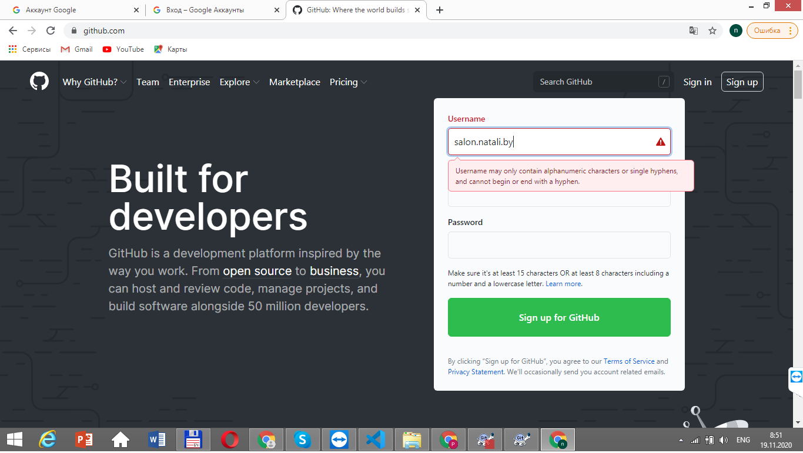
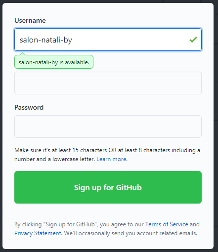
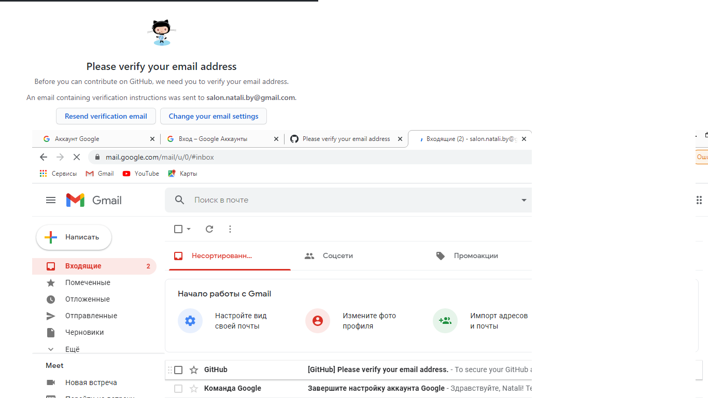

Github-pages
Стадии
1. Выбор свободного домена. (salon-natali.by)
Нужно ли включать в имя ".by"
Выбор правильного доменного имени облегчает регистрацию всех аккаунтов.
2. Регистрация отдельного аккаунта google (salon.natali.by@gmail.com) - гугл не разрешает "-",
а гитхаб наоборот.
!!!! На один номер телефона можно оформить не более 10 google аккаунтов.
Ни в коем случае не набирать, а копировать и вставить
Workaround - регистрация аккаунтов с телефона/планшета со старым андроидом (может и новым).
3. Регистрация отдельного аккаунта на Github
4. Создание репозитория с названием, совпадающим и именем гитхаб-аккаунта
Roman Molchanov


